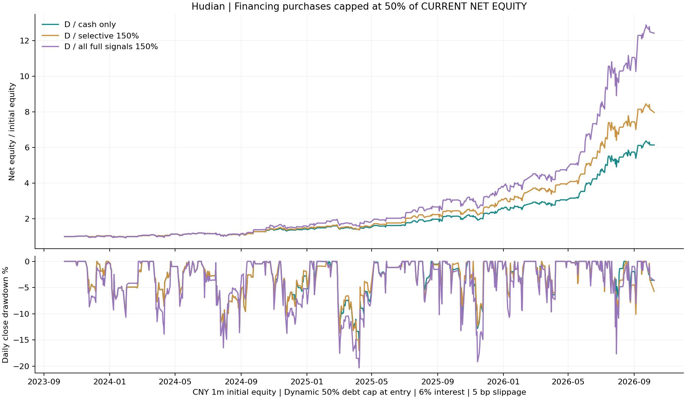

2026-10-09 更新 · 研究区间 2023-10-09 至 2026-10-08 · 按用户确认口径重算
账户净资产 = 现金 + 持股市值 − 融资欠款。每笔融资买入后，欠款不得超过当时净资产 × 50%。 净资产 100 万，最多融资 50 万；净资产增至 200 万，最多融资 100 万；净资产降至 80 万，新买入时最多容许欠款 40 万。它不是初始本金的固定 50 万额度，也不是含融资后的总资产的 50%。
执行上逐笔计入滑点、佣金及过户费，以该根 K 线开盘市价估值现有和新增持仓，验证买入后的净资产与债务比例。若已有欠款占比超标，不再新增融资。 这是买入时的上限；之后价格下跌或计息可使实际杠杆暂时超过 150%，受 T+1、跌停等约束，不能保证随时减回目标。
D 原目标为 100%、H 当日事前状态为反转模式，且 09:55–10:00 K 线收盘高于前六根 5 分钟 K 线的成交均价及当日开盘价时，10:00 尝试提高至 150% 目标。 否则仍执行原有 0% / 50% / 100% 配置。均价为成交金额合计 / 成交量合计，信号不使用 10:00 之后的数据。也可测试 125% 目标。
本金 100 万、融资年息 6%、单边滑点 5 bp：三年收益 +696.73%，5 分钟最大回撤 21.11%。 D 原策略收益 +514.17%、最大回撤 19.32%。 三年累计融资利息 36,674 元，实际仓位峰值 154.12%，最低模拟维持担保比例 284.78%。
原先固定 50 万额度的同条件对照仍保留：收益 +611.00%，回撤 20.39%。当前看板默认已改为动态净资产 50%。
24 个滚动一年窗口中，23 个胜过 D，15 个胜过持有。 2020-01-02 至 2023-09-28 的旧时期收益 -23.71%、回撤 60.94%。 策略仍是历史筛选候选，不能解释为已证实的高确定性。
| 方案 | 三年收益 | 5 分钟最大回撤 | 融资利息（元） | 24 个滚动年胜过 D | 24 个滚动年胜过持有 |
|---|---|---|---|---|---|
| D：不融资 | +514.17% | -19.32% | 0 | 0 | 8 |
| D：所有满仓信号升至 150% | +1141.47% | -25.77% | 113,796 | 24 | 17 |
| D：趋势支持时 125% | +608.09% | -19.36% | 24,129 | 19 | 10 |
| D：趋势支持时 150% | +698.07% | -20.11% | 49,187 | 16 | 13 |
| D：反转有效 + 早盘确认 125% | +604.31% | -20.29% | 17,693 | 23 | 11 |
| D：反转有效 + 早盘确认 150% | +696.73% | -21.11% | 36,674 | 23 | 15 |
| H：不融资 | +427.54% | -22.86% | 0 | 7 | 8 |
| H：反转有效 + 早盘确认 150% | +584.99% | -23.10% | 33,242 | 14 | 15 |
| 每日目标 150% 对照 | +626.48% | -65.43% | 289,939 | 16 | 19 |
不融资持有基准：收益 +423.58%，5 分钟最大回撤 48.20%。滚动窗口长 242 个交易日、每约 21 日滚动一次，每次从现金重新开始。

图中回撤为日线收盘口径，表格为更细的 5 分钟口径。
| 方案 | 三年收益 | 5 分钟最大回撤 | 融资利息（元） |
|---|---|---|---|
| D：不融资 | +514.17% | -19.32% | 0 |
| D：所有满仓信号升至 150% | +785.45% | -22.80% | 35,984 |
| D：趋势支持时 125% | +582.78% | -19.36% | 16,963 |
| D：趋势支持时 150% | +577.84% | -19.56% | 20,174 |
| D：反转有效 + 早盘确认 125% | +593.53% | -20.29% | 11,095 |
| D：反转有效 + 早盘确认 150% | +611.00% | -20.39% | 12,275 |
| H：不融资 | +427.54% | -22.86% | 0 |
| H：反转有效 + 早盘确认 150% | +516.70% | -23.06% | 12,235 |
| 每日目标 150% 对照 | +610.56% | -59.01% | 91,378 |
同一目标仓位，融资额度口径不同会产生不同的复利结果。看板可切换对照，但默认采用用户确认的动态净资产 50%。所有满仓信号直接放大可产生更高历史收益，同时承担更多额外风险；不能据此证明过滤条件的收益期望更高。
| 方案 | 年息 4% 收益 | 年息 8% 收益 | 10 bp 滑点收益 | 20 bp 滑点收益 |
|---|---|---|---|---|
| D：不融资 | +514.17% | +514.17% | +439.32% | +321.80% |
| D：所有满仓信号升至 150% | +1153.63% | +1133.62% | +1004.58% | +713.74% |
| D：趋势支持时 125% | +610.61% | +607.65% | +504.09% | +355.45% |
| D：趋势支持时 150% | +702.89% | +692.00% | +573.52% | +386.44% |
| D：反转有效 + 早盘确认 125% | +605.75% | +603.16% | +517.36% | +364.57% |
| D：反转有效 + 早盘确认 150% | +700.06% | +692.87% | +583.73% | +411.70% |
| H：不融资 | +427.54% | +427.54% | +383.36% | +305.62% |
| H：反转有效 + 早盘确认 150% | +586.94% | +581.01% | +509.52% | +383.46% |
| 每日目标 150% 对照 | +648.09% | +607.26% | +665.18% | +645.52% |
| 方案 | 2020–2023 收益 | 旧时期回撤 |
|---|---|---|
| D：不融资 | -22.05% | -60.12% |
| D：所有满仓信号升至 150% | -26.95% | -73.04% |
| D：趋势支持时 125% | -17.73% | -62.27% |
| D：趋势支持时 150% | -12.89% | -64.21% |
| D：反转有效 + 早盘确认 125% | -22.48% | -60.29% |
| D：反转有效 + 早盘确认 150% | -23.71% | -60.94% |
| H：不融资 | -5.29% | -50.32% |
| H：反转有效 + 早盘确认 150% | -11.95% | -53.76% |
| 每日目标 150% 对照 | -25.23% | -84.96% |
旧时期与当前时期都已经观察过，不是严格的未见样本验证。
规则参考：交易所融资保证金比例调整； 深交所：最低维持担保比例由会员与客户约定。
8 组融资回测、66,898 个数值与独立 Python 程序逐项一致。 逐笔验证融资买入后的欠款 ≤ 当时扣费净资产的 50%；另测试盈利后额度扩大、亏损后额度缩小、T+1 阻止当日强平及周末计息。
基础策略及 24 组融资叠加方案均来自已观察的历史，全部属于探索。CSV 中 flexible 表示当前净资产 50% 的动态上限，fixed_500k 表示固定 50 万额外限制。